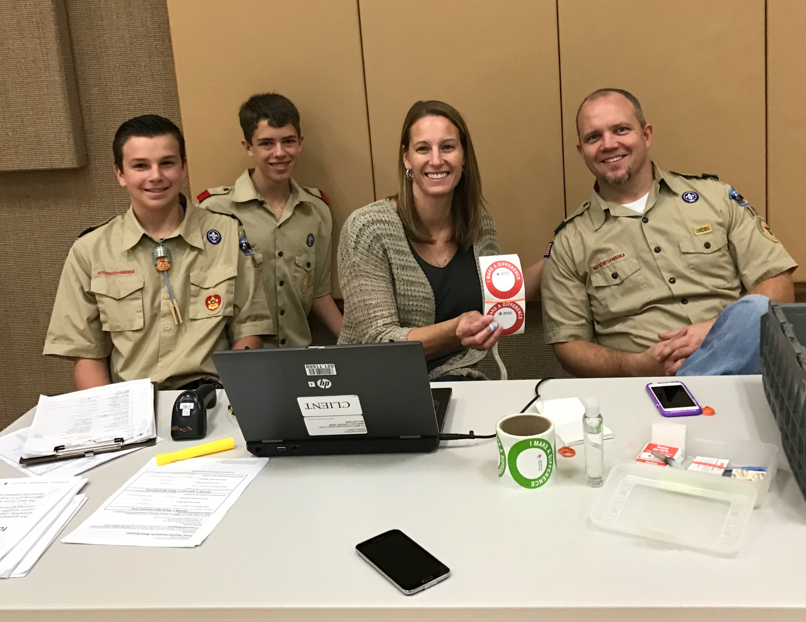
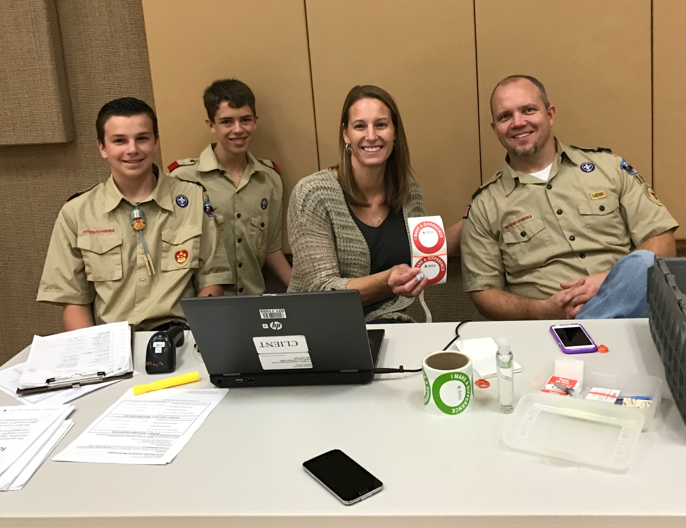

Work Experience
Dental Hygienist Assistant
West Richland Family Dental – 1 Year
Description
This job included bringing patients to the operatory, taking x-rays, polishing the patients’ teeth, assisting the hygienist while ultrasonic scaling, assisting dentists with exams, cleaning and setting up operatories, and more.
Reference:
Robin Charvet 509-967-3421
Vehicle Coordinator
Texas McAllen Mission / McAllen, TX / Jan 2021 – Apr 2021
Description
As part of this job, I was the fleet manager of 88 church-owned vehicles. This included reviewing and signing off on gas card purchase history, receiving and recording mile usage reports from drivers, holding drivers accountable to our driver accountability program, making sure the vehicles were in good repair, scheduling needed maintenance, working with repair shops and insurance for repairs, and much more.
Reference:
Jared Ocampo 956-279-8558
Accomplishments
Spanish Seal of Biliteracy - 2019
Between junior high and high school, I took 4 years of Spanish language classes. In my fourth year of Spanish language class I took the STAMP language proficiency test to certify that I had attained a proficient level of Spanish language skills including reading, writing, listening, and speaking. I passed with flying colors and earned the Spanish Seal of Biliteracy on my high school diploma, certifying that I was literate in both the English and Spanish languages.
Eagle Scout - 2017
To earn my Eagle Scout award I had to complete 21 merit badges (some of which took 3+ months to complete) and complete an Eagle Scout project. The goal of any Eagle Scout project is to do something that benefits others in a positive way while also building leadership skills in the scout doing the project. For my Eagle Scout project, I coordinated and carried out three blood drives for the American Red Cross, collecting 100 units of blood. Throughout the course of the project I had the opportunity to work with representatives from the American Red Cross to plan for use of facilities and advertising for the drives. I was also able to do a lot of networking to recruit people to come and donate blood. I would go to various different church congregations and ask for a few minutes at the beginning of Sunday school to tell people about the drive and pass around a sign up sheet. I would then call the people who signed up the day before the drive to remind them about it. Overall, it was a very successful Eagle Scout Project and I learned a lot about leading and working with others.
 
